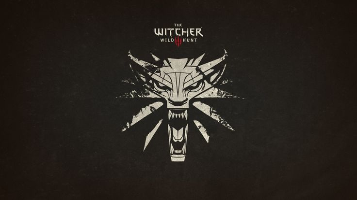
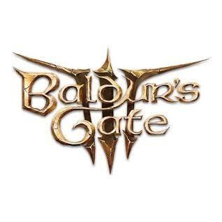

O que define um RPG
Nos RPGs você assume um papel, evolui o personagem e toma decisões que mudam a narrativa. Há opções de turnos, ação e mundo aberto.
Seu ponto de apoio no mundo dos games
Nos RPGs você assume um papel, evolui o personagem e toma decisões que mudam a narrativa. Há opções de turnos, ação e mundo aberto.
Escolha um título com tutorial claro e história envolvente. Comece em dificuldade normal para aprender as mecânicas sem frustração.
Explore os cenários, converse com todos os personagens e faça saves em slots diferentes para testar escolhas.

RPG de mundo aberto em que você controla o caçador de monstros Geralt, com missões longas e escolhas que têm consequências.
RPG de ação em primeira pessoa ambientado na futurista Night City, com customização do personagem e várias formas de resolver as missões.

RPG de turnos baseado em Dungeons & Dragons, com muita liberdade de escolha e companheiros marcantes.